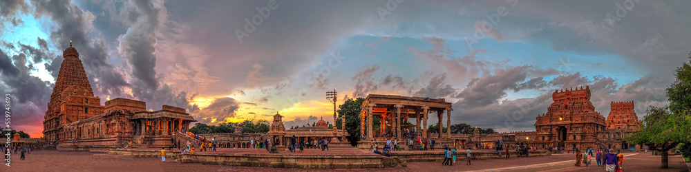

Brihadishvara Temple, called Rajarajesvaram (lit. 'Lord of Rajaraja') by its builder, and known locally as Thanjai Periya Kovil (lit. 'Thanjavur Big Temple') and Peruvudaiyar Kovil, is a Shaivite[3][4] Hindu temple built in a Chola architectural style[5] located on the south bank of the Cauvery river in Thanjavur, Tamil Nadu, India.[1][6] It is one of the largest Hindu temples and an exemplar of Tamil architecture.[7] It is also called Dakshina Meru (Meru of the South).[8] Built by Chola emperor Rajaraja I between 1003 and 1010 CE, the temple is a part of the UNESCO World Heritage Site known as the "Great Living Chola Temples", along with the Chola-era Gangaikonda Cholapuram temple and Airavatesvara temple, which are about 70 kilometres (43 mi) and 40 kilometres (25 mi) to its northeast respectively.[9] The original monuments of this 11th-century temple were built around a moat. It included gopura, the main temple, its massive tower, inscriptions, frescoes, and sculptures predominantly related to Shaivism, but also of Vaishnavism and Shaktism. The temple was damaged in its history and some artwork is now missing. Additional mandapam and monuments were added in the centuries that followed. The temple now stands amidst fortified walls that were added after the 16th century.[10][11] Built using granite, the vimana tower above the shrine is one of the tallest in South India.[6] The temple has a massive colonnaded prakara (corridor) and one of the largest Shiva lingas in India.[6][9][12] It is also famed for the quality of its sculpture, as well as being the location that commissioned the brass Nataraja, Shiva as the lord of dance, in the 11th century. The complex includes shrines for Nandi, Parvati, Murugan, Ganesha, Sabhapati, Dakshinamurti, Chandeshvara, Varahi, Thiyagarajar of Thiruvarur, Siddhar Karuvoorar and others.[9][13] The temple is one of the most visited tourist attractions in Tamil Nadu.
